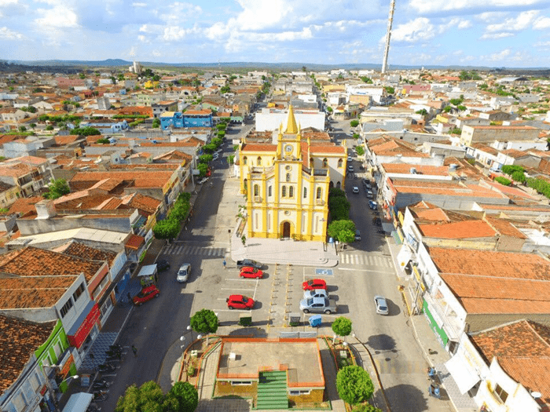

Bem-vindo a Tabira, PE!
Conheça a história, a cultura e as características de uma cidade especial do Sertão do Pajeú.
Conheça Tabira📍 Localização
Tabira está localizada no Sertão do Pajeú, na região do semiárido pernambucano. O município fica próximo de cidades como Afogados da Ingazeira, São José do Egito, Solidão e Santa Terezinha.

Sobre Tabira
História
A história de Tabira está ligada à formação do Sertão do Pajeú. O povoamento começou a crescer no século XIX, quando Gonçalo Gomes criou uma feira em sua fazenda, por volta de 1865.
O local recebeu diferentes nomes, como Madeira, Toco de Gonçalo Gomes e Espírito Santo, até passar a ser chamado de Tabira.
Em 1938, o distrito passou oficialmente a se chamar Tabira. Em 1948, foi criado o município, desmembrado de Afogados da Ingazeira. A instalação do município aconteceu em 27 de maio de 1949.
Região
Tabira faz parte do Sertão do Pajeú, uma região conhecida por sua paisagem típica do semiárido, pelo clima quente e pela forte identidade cultural.
O Sertão do Pajeú possui uma grande tradição na agricultura, criação de animais, comércio e manifestações culturais populares.
População
De acordo com o Censo 2022 do IBGE, Tabira possui aproximadamente 27,7 mil habitantes.
A população é formada principalmente por pessoas ligadas à vida urbana e rural, mantendo costumes e tradições características do Sertão pernambucano.
Cultura
Tabira é conhecida por sua forte tradição na poesia popular, no repente, na cantoria de viola, na literatura de cordel e na declamação.
A cidade possui diversos poetas e artistas ligados à cultura popular nordestina, sendo considerada um importante centro da poesia do Sertão do Pajeú.
Uma cultura popular
Uma das principais manifestações culturais de Tabira é a poesia popular. O município é conhecido pelas mesas de glosas, pelos repentistas, cantadores e poetas populares. A Missa do Poeta também é uma importante tradição cultural da cidade.